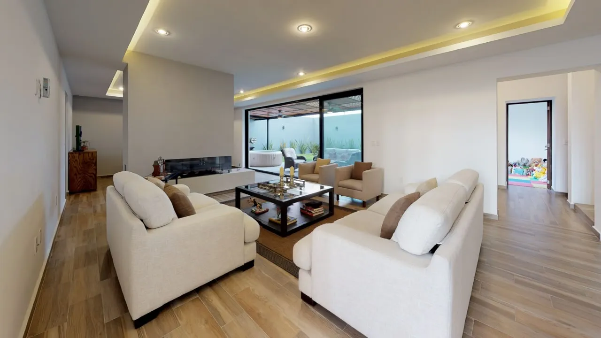
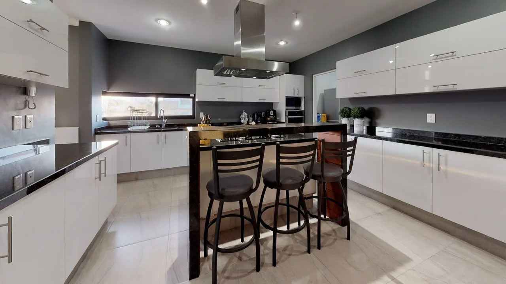
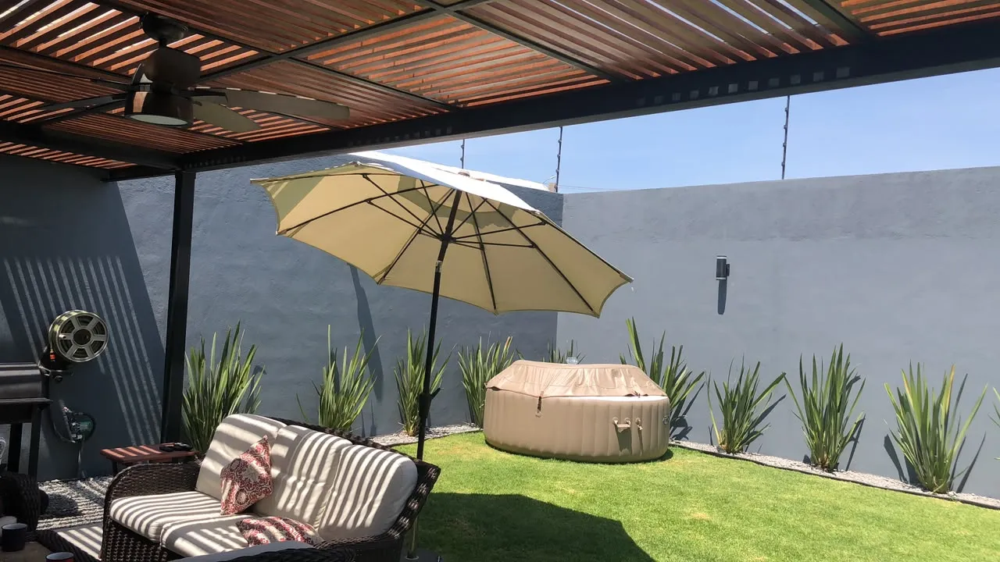
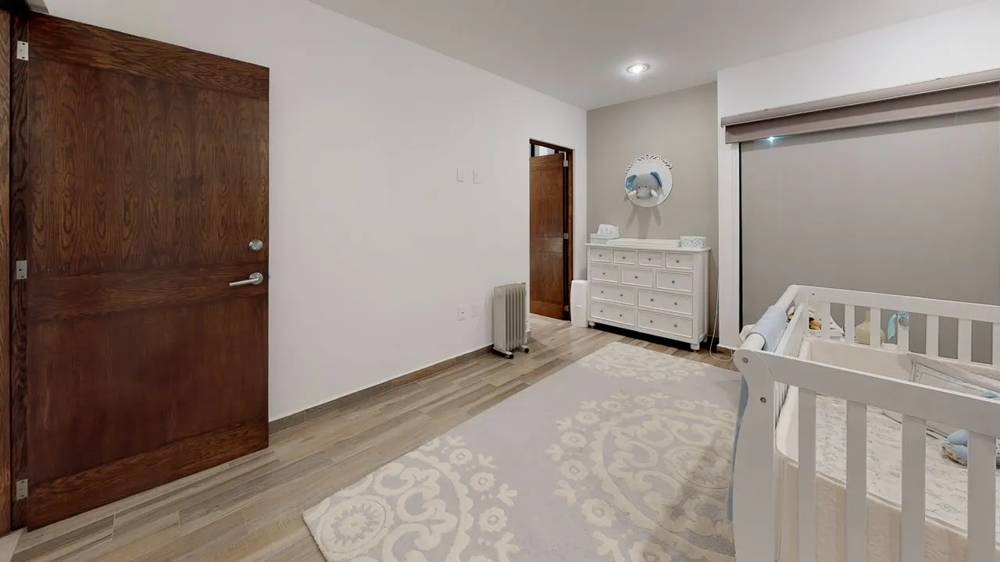
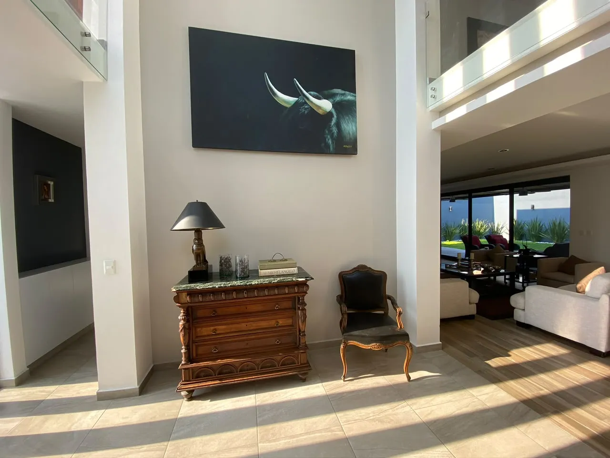

Una casa que admite distintas rutinas
La recámara en planta baja y el estudio permiten separar descanso, visitas y trabajo. Es una distribución que vale la pena recorrer pensando en cómo usarías cada espacio.
Casa · Juriquilla
$14,450,000 MXN
Referencia de ficha. Confirma el precio vigente.





Desliza para explorar las imágenes →
MÁS ALLÁ DE LOS METROS CUADRADOS
Puede encajar contigo si… Quieres combinar reuniones, trabajo en casa y espacios privados sin concentrarlo todo en la sala.
La recámara en planta baja y el estudio permiten separar descanso, visitas y trabajo. Es una distribución que vale la pena recorrer pensando en cómo usarías cada espacio.
Sala, comedor, bar y jardín ofrecen distintos escenarios para convivir. La terraza de la recámara principal añade un espacio más reservado.
Puede encajar si buscas vivienda en el norte de Querétaro. Compara tus recorridos habituales desde Altárica, además de los servicios que realmente utilizarías.
Revisa accesos, mantenimiento y el uso de la recámara en planta baja; confirma que su distribución resuelva tus necesidades.
UBICACIÓN Y ENTORNO
Búsqueda por nombre del desarrollo; confirma el acceso conmigo antes de tu visita.
Espacios para recibir, trabajar y disfrutar en casa. Sala y comedor, bar, chimenea de etanol y una recámara principal con terraza.